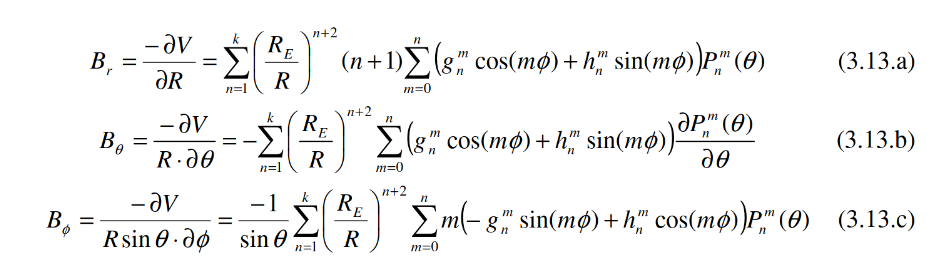

Magnetic Field Model
Owner: @Lundeen
Outline
The satellite knows where it is because it has a GPS. Using GPS coordinates, the satellite can use an internal model of the earth's magnetic field to calculate what the magnetic field vector should be at that point. This can later be compared with magnetometer readings to calculate the attitude of the satellite.
Resources
Details
Because the magnetic field has no sources in space (no large currents or changing electric fields) it can be described as the gradient of a scalar function, and this scalar function must satisfy a laplace equation. The laplace equation is solved for spherical potentials and it can be shown that solutions to the laplace equation must be in the form of a radial function times a spherical harmonic.
The spherical harmonics are simply a sinusoid in the phi(azimuthal) direction and a legendre polynomial in the theta (altitude) direction.
Because we know that the magnetic field is the gradient of this potential, we can find its components analytically by taking this gradient. These are shown in the equations below from Gießelmann. 
These equations tell us what we need to calculate:
- The spherical harmonics (evalutated at our phi, theta).
- The derivatives of the harmonics to give us the theta term.
- The harmonic coefficients. These are measured by NOAA and [listed in the resource above. We will store these but not calculate them ourselves.
Calculating Legendre Polynomials
Wikipedia on associated legendre functions Technically these are not polynomials, but functions because they have non integer powers. The values (calculated at a given theta and phi) are stored in an array as follows:
const float P = Pnm[n][m]; // Legendre polynomials
const float dP = Pnm[m][n+1] // Derivatives
Because the legendre polynomials we need to use are schmidt quasi-normalized, the recurence relation is actually the normal relation.
But basically we implement the above formula.